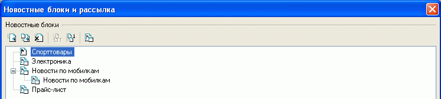
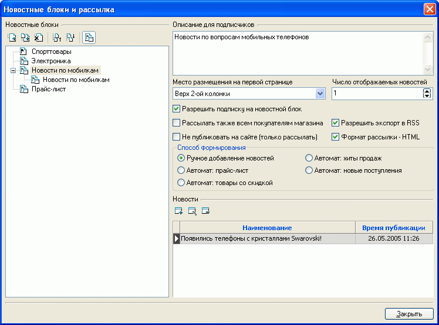
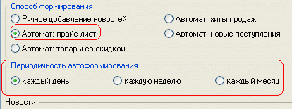
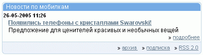

Для своевременного информирования посетителей интернет - магазина и подписчиков новостей о всевозможных событиях служит имеющаяся в программе Melbis Shop система новостных блоков и рассылок. Эти блоки предварительно необходимо создать.
В левой части окна "Новостные блоки и рассылка", вызываемого из главного окна "Дополнительно-Новостные блоки и рассылка", отображается дерево новостных блоков. Новостные блоки могут группироваться в разделы. Разделы и текстовые блоки можно добавлять, удалять, переименовывать, группировать, сортировать.

Для обозначения того, чем - разделом или новостным блоком - является вновь созданный объект, служит кнопка , расположенная над деревом новостных блоков. Раздел не имеет своих значений, а только группирует схожие подразделы или новостные блоки. Сам новостной блок имеет описание и ряд параметров, определяющих место размещения, число одновременно отображаемых новостей, запрет/разрешение подписки на данный блок и ряд других опций. Дополнительные места размещения новостных блоков могут быть определены в редакторе дизайн-макетов и мест размещения данных. Желательно, чтобы название новостного блока не было длинным (умещалось в одну строку в заданной колонке отображения).

При необходимости организации рассылки новостей одним подписчикам в формате HTML, а другим в текстовом, создается две новости с идентичным содержанием, но с разными значениями параметра рассылки. Естественно, отображать на сайте следует только одну из этих новостей.
При задании автоматического способа формирования прайс листа или товаров со скидкой появляется дополнительная опция для выбора периодичности автоформирования:

Автоматически формируемые новости на сайте не публикуются, а только рассылаются. Возможна не только автоматическая отправка прайс-листа или товаров со скидкой, но и ручное добавление любых новостей для отправки подписчикам этого раздела.
Время рассылки зависит от заданного при установке серверной части времени выполнения крон-скрипта shop_cwd/admin/cron/news_send.php. Как правило, это ежедневно, в момент минимальной посещаемости магазина.
Внешний вид блока новостей может иметь следующий вид (дизайн страницы с указанной формой может отличаться от приведенного):
